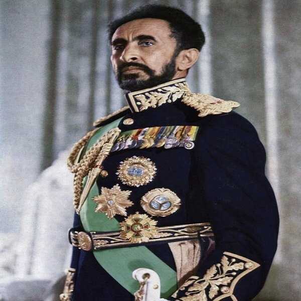

Mansa Musa (about 1280 – about 1337) was an emperor (manse) of the Mali Empire during the 14th century. He became emperor in 1312. He was the first African ruler to be widely known throughout Europe and the Middle East, and is regarded as the richest person to have ever lived. His wealth greatly surpassing anyone today. Mansa Musa is one of the richest man to ever live with a net worth of around $12 trillion. Mansa Musa was the great nephew of Sundiata Keita, who was founder of the empire. He is famous for his Hajj (1324–5). His caravan was said to consist of 60,000 people carrying supplies and bags, 500 slaves each carrying a gold staff, and 80 to 100 camels each carrying 300 pounds of gold dust. On his journey, he is said to have given out millions of dollars worth of gold. He gave out so much gold in Cairo that the value stayed relatively low for many years. Mansa Musa stopped at multiple locations during his journey. These placed include Timbuktu, Gao, and Mecca. He stopped every Friday at a destination and left enough gold for a mosque to be built. In Timbuktu, Mansa Musa made it a center of trade, culture, and Islam, which also helped increase the spread of Islam throughout Western Africa. Mansa Musa also helped to spread Islam. He was a devoted Muslim, and built many schools based on the teachings of the Qur'an, there also is a saying that every Friday when he stopped, while on his Hajj, he ordered a Mosque to be built, because that is a Muslim holy day. He sent students to Islamic universities in northern Africa was fames sens 1345. After his Hajj, European cartographers began to draw Mansa Musa on maps. As the empire of Mali fell apart Mansa Musa's reputation did as well; he was no longer drawn as a noble king on maps, but instead more uncivilized. He was drawn as a parody of European royalty, and a normal person with a crown. Mansa Musa was married to Inari Kunate. Mansa Musa, at his time worth $900 billion is still the richest man to date.
Mansa Musa here is seen as a symbol of African Heritage.All people of African descent should be proud of such an unbelievably huge achievement bestowed on the Africans by this great man; Mansa Musa
Haile Selassie I (Ge'ez: ቀዳማዊ ኀይለ ሥላሴ, romanized: Qädamawi Häylä Səllasé,[nb 2] Amharic pronunciation: [ˈhaɪlə sɨlˈlase] (listen);[nb 3] born Tafari Makonnen; 23 July 1892 – 27 August 1975)[4] was Emperor of Ethiopia from 1930 to 1974. Prior to his coronation, he had been the Regent Plenipotentiary of Ethiopia from 1916. He is a defining figure in modern Ethiopian history.[5][6] He was a member of the Solomonic dynasty who traced his lineage to Emperor Menelik I, the son of King Solomon and Makeda the Queen of Sheba. Haile Selassie attempted to modernize the country through a series of political and social reforms, including the introduction of Ethiopia's first written constitution and the abolition of slavery. He led the failed efforts to defend Ethiopia during the Second Italo-Ethiopian War and spent the period of Italian occupation in exile in England. He returned to lead Ethiopia in 1941 after the British Empire defeated the Italian occupiers in the East African campaign. He dissolved the Federation of Ethiopia and Eritrea, which was established by the UN General Assembly in 1950, and integrated Eritrea as a province of Ethiopia while fighting to prevent their secession.[7] His internationalist views led to Ethiopia becoming a charter member of the United Nations.[8] In 1963, he presided over the formation of the Organisation of African Unity, the precursor of the African Union, and served as its first chairman. He was overthrown in a 1974 military coup by a Marxist-Leninist junta, the Derg. Selassie was murdered by the junta on 27 August 1975.[9] Among some members of the Rastafari movement, Haile Selassie is referred to as the returned messiah of the Bible, God incarnate. This distinction notwithstanding, Haile Selassie was a Christian and adhered to the tenets and liturgy of the Ethiopian Orthodox church.[10][11] The Rastafari movement was founded in Jamaica sometime around 1930 and its followers are estimated at between 700,000 and one million as of 2012.[12]